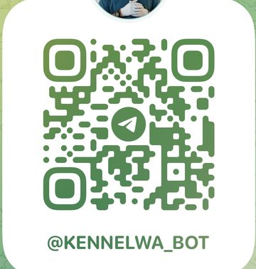
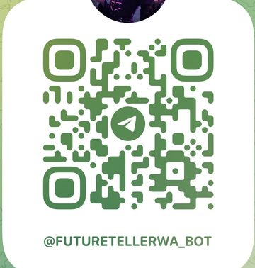
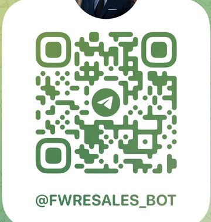

让曝光翻五倍，让生意自己找上门——一支不睡觉的 AI 员工军团，一台按季度复利的获客与分析引擎。
立足西澳 Perth ｜ 实盘验证：电商 · 宠物 · 车行 · 智能助手集群 ｜ 盈以守正，扬帆致远。
用多模型 Agent 编排（Claude / Codex / Hermes），通过 Telegram（OpenClaw 接入）交付六大服务：静态网站引流工厂、资料分析、股市分析、加密市场分析、财经时事→宏观波动解读、私人助手。
100+ 天全职实战：四套工具链跑通、自建数据库落地，且已有三类实盘业务在运行——电商、宠物垂直网站、多个 Telegram bot。不是想法，是已在赚钱路上的系统。
AI Agent 市场规模 2024 年约 51 亿美元，预计 2030 年达 471 亿美元，年复合增速 ~44.8%（MarketsandMarkets）。
三层收入：订阅制分析简报（TG 会员）＋ 项目制（网站工厂 / 定制 Agent）＋ 高端私有化部署（自建数据库、专属助手）。
数据私有化：客户数据存于自建加密数据库而非第三方云端 SaaS——隐私、私密、稳定，专为高质量、高客单客户设计。
天使轮 $80 万（条款面议，详见「融资需求」页），24–30 个月跑道。回报逻辑见「浪潮论证与回报」章节：以公开基准倒推，3–5 倍属里程碑达成情形下的保守区间。
过去三个多月，我们以「一人 + Agent 编队」的方式完成了从 0 到 1 的技术与流程验证。
深度使用 Claude 与 Codex 建立 AI 结对开发流程：需求 → 生成 → 审查 → 部署，全流程自动化。
部署开源 OpenClaw 网关，把 Agent 能力接入 Telegram，实现「一条消息即一次任务」的交付形态。
引入 Hermes agent 做多任务编排与可本地化推理，配套搭建自建数据库 v1（客户 / 行情 / 新闻 / 知识四库）。
引流网站工厂、资料分析、股市 / 币圈分析、时事宏观引擎、私人助手全部具备可演示原型。
来源：MarketsandMarkets《AI Agents Market》(2024)；McKinsey《The economic potential of generative AI》(2023)。中间年份为按 CAGR 插值的估算。
· Anthropic 向澳数据中心运营商发出保密招标（RFP），寻求至少 1.4GW 数据中心容量
· 项目建设成本估计最高约 150 亿美元（约 216 亿澳元）
· 目标 2027 年底前至少 1GW 投入使用
· 入围五家：CDC、AirTrunk、NextDC、IREN、Stack
· 报道时尚未签约——引用口径已如实标注
来源：Australian Financial Review（2026-07，经多家媒体转引，尚未签约）；澳产业部 / Anthropic 官方（2026-04 MoU）；Firmus / Milbank / Kirkland & Ellis 交易公告（2026-02）。
| 机构 | 已实现的成果（非预测） | 来源 / 年份 |
|---|---|---|
| CBA 联邦银行 | 欺诈损失同比降逾 20%；约 75% 的银行卡反欺诈规则由 Agentic AI 生成维护；反诈组合拳使诈骗损失降 76% | CBA 官方，2025–26 |
| Westpac 西太银行 | 两年投入超 A$1 亿做 AI 反诈，为客户避免损失超 A$5 亿；一个 AI agent 用 1 小时完成约 6 人日的工程任务 | Westpac / Global Finance，2025 |
| NAB 国民银行 | 7,000+ 工程师全员配备 AI 编码工具，交付周期显著缩短 | NAB / iTnews，2025 |
| Rio Tinto 力拓 | Pilbara 约 130 辆自动矿卡：装载运输单位成本降约 15%、油耗降约 10%，年节省估计超 US$1 亿 | Rio Tinto / Mining Digital，2023–25 |
| Coles 超市 | FY25 归因于机器学习与自动化的成本节省 A$3.27 亿 | FY25 财报 / Mi3，2025 |
来源：timeanddate.com（2026）；WA 无夏令时为州法律现状。
| 政策工具 | 力度 | 对本项目的意义 |
|---|---|---|
| R&D Tax Incentive（联邦） | 年营业额 < A$2,000 万的公司：研发支出按「公司税率 + 18.5pp」即 43.5% 退税，亏损期可现金退还 | 研发投入近半由税务体系返还——直接延长 $80 万融资的跑道 |
| 公司税 base rate（联邦） | 25%（营业额 < A$5,000 万） | 盈利后的留存与分红效率高于多数发达市场 |
| New Industries and Innovation Fund（WA 州） | 2025–29 年 A$4,000 万；Innovation Booster Grant 单笔最高 A$5 万 | 面向早期创始人的州级补贴，计划于种子期申请 |
| Investment Attraction Fund（WA 州） | 总额 A$1 亿 | 业务规模化阶段的备选支持 |
来源：ATO / PwC Tax Summaries（2025–26）；WA Government（wa.gov.au，2025–26）。
每一层都是同一个判断的加码：智能是新的基础设施。资本在上游建电厂，我们在下游开灯——投资本项目买的是这条浪潮里最轻、最快回收的一段。
来源：本部分前述各页；Morgan Stanley / Goldman Sachs（2026，预测口径）。
| 客户画像 | 核心痛点 | 现有替代方案 | 替代方案的缺陷 |
|---|---|---|---|
| 中小企业主 | 获客越来越贵，投放平台绑架预算 | 代运营 / 广告投放 | 月费高、效果不透明、停投即断流 |
| 活跃交易者 | 信息过载，重大事件反应不过来 | 免费资讯群 / 机构终端 | 噪音多、时效差；机构终端年费数万美元 |
| 高净值个人 / 家办 | 助手与研究需求高度私密 | 人力助理 / 云端 AI 工具 | 人力贵且能力有限；云端工具数据外流风险 |
共同缺口：一个买得起、随身达、数据可控的智能服务层。
用 AI 把「自有流量资产」的成本打下来。
A 静态网站生成工厂行业落地页 / 内容站群，批量生成、边缘部署、SEO 引流。
B 资料与数据分析合同、报表、研报的结构化分析与洞察。
7×24 事件驱动的金融信息服务。
C 股市分析助手 D 加密市场分析盘前简报、持仓监控、链上异动、叙事追踪。
E 时事 → 宏观波动引擎 F 私人助手新闻对经济与货币的传导解读；日程、邮件、研究委托。
中枢 ＝ Telegram 入口（OpenClaw）＋ 多模型编排（Claude / Codex / Hermes）＋ 自建加密数据库 —— 六个模块共用同一套底座，边际成本递减。
客户 › 分析一下今晚美联储决议的影响
安澜 › ✓ 已生成宏观简报（美元/黄金/BTC 三段传导）
客户 › 给我的建材生意做个获客落地页
安澜 › ✓ 网站已部署，含 SEO 文案与询盘表单
客户 › BTC 资金费率异常时提醒我
安澜 › ✓ 监控已挂载，7×24 生效
一句话到整站上线，站群引流，为客户和我们自己持续收集线索。
合同 / 报表 / 研报的结构化解读，输出风险点与商业洞察。
盘前简报、财报解读、持仓监控与技术面信号聚合。
7×24 链上 + 交易所监控，巨鲸异动与叙事追踪。
新闻财经事件对经济与货币的传导解读，分级推送。
日程、邮件、研究委托与文件管理，记忆存于自建库，高度私密。
① 对外是产品——向中小企业按项目 + 月维护收费；
② 对内是获客引擎——我们自己的财经内容站群为分析线订阅持续引流，广告预算 ≈ 0。
已验证 从需求到上线 < 1 小时（内部实测）。
重要 本模块为信息与研究服务：呈现事实、数据与情景分析，不提供买卖建议、不代客操作、不承诺收益。每份简报附风险提示。合规细节见「合规与安全」页。
同等信息密度的替代品是数万美元/年的机构终端；我们以个人可负担的订阅价格，交付其中对个人交易者最实用的部分。
· 用户本来就活在 Telegram，转化路径为零
· 7×24 波动 = 人力不可替代 Agent 的场景
· 订阅付费习惯成熟（付费信号群已是既有市场）
· 我们以「数据 + 逻辑透明」区别于喊单群
合规 高风险资产提示前置；按客户所在司法辖区限制服务范围（见「合规与安全」页）。
多语种新闻源、央行与监管公告、社媒信号 7×24 抓取
货币政策 / 地缘政治 / 监管动态 / 产业事件
Claude 推演事件对利率、汇率、大宗、股指、加密资产的传导路径
红 / 黄 / 蓝三级：即时警报 · 当日要点 · 每周综述
「美联储维持利率但点阵图转鹰 → 美元指数短线走强 → 非美货币与黄金承压 → 高贝塔风险资产（成长股 / BTC）流动性预期收紧 → 关注两日内美债收益率确认信号。」——附数据出处与历史类似情景对照。
客户要的不是「新闻更快」，而是「波动之前先看懂传导」。经济与货币的每一次波动都是一次付费理由——市场越动荡，本模块留存越高，天然反脆弱。
私人助手是信任密度最高的服务——也因此是客单价与转介绍率最高的产品。
· 目标客户：企业主、高净值个人、小型家办
· 交付形态：年费制 + 私有化部署一次性费用
· 获客来源：模块 A–E 用户中的高价值分层 + 转介绍
定位 每一位私人助手客户，都是从订阅池里「长」出来的。
客户资料、对话记忆、分析档案存储于我们自建的加密数据库，静态加密 + 传输加密 + 最小化留存；不进入任何第三方 SaaS 的数据管道，不被用于外部模型训练。
按客户隔离的数据分区与访问控制；敏感任务路由本地 Hermes 推理，原文可「阅后即焚」。对高净值客户，这是成交的先决条件而非加分项。
不依赖第三方云端 SaaS 的存续、改价与限流；本地 + 异地双备份，故障恢复流程已演练。相对云端服务，命运掌握在自己（和客户）手里。
选品、文案、素材、客服由 Agent 流水线执行——一人维护传统小团队的运营面。
网站工厂首批产物：SEO 内容定时更新、流量变现闭环；澳洲英文版拓展中。
行情警报、简报、客服、助手并行——四个模块已有实盘原型。
本地车行库存展示站 + 询盘线索管道——获客线首个 B2B 行业标杆，行业模板可复制。
| 指标 | 典型现状（Perth 中小车行） | 12 个月目标 | 靠什么做到 |
|---|---|---|---|
| 线上曝光 | 只靠平台挂车，搜索里几乎隐形 | ×5–10 | 每台车一个专属页面吃长尾搜索（如「2019 CX-5 Perth 二手」）+ 行业内容站群 |
| 有效询盘 | 电话与到店随缘，下班即失联 | ×3–5 | 24 小时智能助手即时报价、留资，一条询价都不漏 |
| 跟进转化 | 靠销售员记性 | 颗粒归仓 | 线索自动评分 + 跟进序列，全部沉淀进客户库 |
| 销售额 | 基线 | 目标翻倍（×2） | 曝光 × 询盘 × 转化三个环节同时抬升的乘法效应 |
建站项目费 + 月度维护费 + 素材包订阅；客户赚什么：多卖车、库存周转加快——账算得过来，续费才可持续。
倍数为基于获客机制的示例目标（非承诺）；上线后以实际曝光、询盘与成交数据按月校准并向客户与投资人同步。
| 指标 | 典型现状（名表买卖） | 12 个月目标 | 靠什么做到 |
|---|---|---|---|
| 线上曝光 | 靠口碑与橱窗，线上近乎空白 | ×5+ | 每款表一页 + 行情参考价内容（如「Perth 二手 Submariner 行情」）——买表人搜什么，我们就在什么词上 |
| 询价转化 | 价格不透明，客户犹豫流失 | 翻倍 | 公开行情参考价先建立信任，报价机器人即时响应 |
| 高净值名单 | 成交即结束，客户资产闲置 | 每单都留资 | 询价即入库——名表客户是私人助手「安澜」的天然目标客群 |
| 销售额 | 基线 | 目标翻倍（×2），高客单弹性更大 | 曝光 + 信任定价 + 名单复购三轮驱动 |
第一层：表行付建站与月费；第二层：沉淀的高净值名单向私人助手与私有化部署导流——一个行业客户，两条收入曲线。
示例目标（非承诺），机制同车行页；名单使用严格遵守隐私承诺与客户授权。
| 行业 · 公司 | AI 用在哪 | 公开数字（口径） | 来源 · 年份 |
|---|---|---|---|
| 摩托车经销 · Harley-Davidson 纽约店 | AI 投放优化 | 合格线索 +2,930%（≈30 倍，线索口径；日均 1 → 40） | Harvard Business Review，2017 |
| 汽车经销 · Apple Honda | AI 挖掘客户数据（CDP） | 3 个月识别 3,900 个商机、成交 67 辆（成交量口径，厂商案例） | Fullpath 案例，2025 |
| 汽车经销 · 行业面 | AI 跟进与运营 | 55% 已用 AI 的经销商 2024 年收入增 10–30% | 行业调研，2024–25 |
| 宠物零售 · PetSmart | AI 决策引擎 | 美容预约 +22%、订阅交易 +13% | The Applied 案例，2025 |
| 服装品牌 · Cosabella | AI 广告投放 | Facebook ROAS +565%，广告费 −12%（厂商口径） | Business Wire，2017 |
| 直播电商 · 京东言犀 | AI 数字人带货 | 9,000+ 品牌累计 GMV 增量超 ¥140 亿；单场转化 32%（安踏双 11） | 中国经济网，2025 |
| 泛零售 · McKinsey 研究 | 个性化推荐 | 收入 +10–15%（权威区间 5–25%） | McKinsey，2021 |
口径已严格区分（线索 / 成交 / ROAS / 收入）；标注「厂商案例」者为 vendor-reported、未经第三方审计——我们照实说，也请您用同样标准审视任何项目。
AI 投放与 SEO 站群
Harley 线索 30 倍的源头
24 小时不漏接一条
Impel：线索→预约 +44%
AI 评分与自动跟进
行业口径：成交率 +26%
个性化与提醒
PetSmart：预约 +22%
即便每个环节只取公开案例的零头：曝光 ×2 · 承接 ×1.4 · 转化 ×1.2 · 复购 ×1.1 ≈ ×3.7。
我们对车行、表行客户只承诺 ×2 目标——留了将近一半的安全边际。这不是激进假设，是对已验证机制的保守应用。
行业里最响的数字（29 倍）是「线索」不是「销售额」——本企划书全程严格区分线索/成交/ROAS/收入四种口径。也请您用这个标准审视任何声称「AI 让销售翻 N 倍」的项目：混用口径的，多半在讲故事。
| 产出项 | 实测能力 |
|---|---|
| 静态网站 | < 1 小时 / 站，可并行批量生成 |
| SEO 内容 | 多站点每日自动更新，无人值守 |
| 分析简报 | 三类模板分钟级生成，7×24 触发 |
| bot 服务 | N 个 bot 并行值守，互不占用人力 |
| 电商素材 | 图像 API 单图 < $0.25（2026 年行价） |
| 人力对照 | 同等产出传统需要内容、运营、客服、分析 5–8 人 |
| 阶段 | 项目（→ 对应收入线） | 状态 |
|---|---|---|
| 前期 · 0–6 个月 | 订阅计费上线 · 站群扩张 · TG bot 产品化 · 电商素材包 · 宠物站变现（+澳洲英文版）· 车行模板（Perth 落地中）· 手表/名表模板（筹备）· 资料分析按次 | 全部基于已验证能力 |
| 中期 · 6–18 个月 | 私有化部署标准包 · 短视频营销流水线 · 产品图 / 3D 资产服务 · 英语市场站群 · bot 白标（B2B2C） | 能力已可用，商用早期 |
| 后期 · 18–36 个月 | AI 影视工作室 · 设计→模拟→制造服务 · 宠物智能硬件试点 · 物理 AI 标杆案例 | 条件触发，期权性质 |
| 项目 | 交付物 | 依托能力 |
|---|---|---|
| 订阅计费体系 | TG 内支付 + 会员管理上线 | bot 矩阵（已运行） |
| 内容站群扩张 | 首批 20 个行业 / 财经站上线引流 | 网站工厂（<1 小时/站，实测） |
| 分析订阅公测 | 股市 / 加密 / 宏观三线简报付费墙 | 简报模板（已成型） |
| 电商素材服务包 | 产品图 + 文案 + 社媒素材月度包 | 图像 + 文本管线（实盘在用） |
| 宠物站变现闭环 | 联盟 + 电商转化数据基线 | 自有实盘 |
| 数据库 v2 | 权限体系 + 审计日志 + 备份自动化 | 数据库 v1（运行中） |
· 每月一封投资人信：实际收入、成本、客户数、留存——只报实际数
· 付费客户可访谈（尽调延续）
· 后台数据面板按 NDA 开放
对赌自己 若 6 个月未产生任何真实付费收入，创始人主动召集投资人复盘会并提交调整方案——写进投后条款也可以。
股市 / 加密 / 宏观简报的 TG 会员订阅，月付或年付。
角色：现金流基本盘，估值锚。
毛利：高（边际成本≈模型推理费）。
获客网站工厂（建站 + 月维护）、定制 Agent 开发、资料分析按次付费。
角色：早期造血 + 获客入口。
毛利：中高（交付高度自动化）。
私人助手年费、私有化部署（一次性 + 年度维保）。
角色：客单价天花板，品牌与壁垒。
毛利：最高（信任溢价）。
| 产品 | 计费方式 | 示例定价 | 对标锚点 |
|---|---|---|---|
| 免费频道简报 | 免费 | A$0 | 获客与信任入口 |
| 分析订阅 · 单线（股市/加密/宏观/房产任选） | 月订阅 | A$49 / 月 | 低于付费信号群，信息密度更高 |
| 分析订阅 · 全家桶 + 个性化警报 | 月订阅 | A$129 / 月 | ≈ 机构终端的 1/30 |
| 电商素材包（图 + 文案 + 社媒） | 月订阅 | A$199 / 月 | ≈ 一名兼职美工的 1/10 |
| 行业建站（车行 / 表行 / 宠物模板） | 项目 + 月维护 | A$1,500–3,000 + A$149 / 月 | 低于代运营月费的一半 |
| 资料分析（合同 / 研报） | 按次 | A$80–300 / 次 | 体验型转化入口 |
| 私人助手「安澜」 | 月费 | A$800–1,500 / 月 | 人力助理的 1/5 |
| 私有化部署 | 一次性 + 年维保 | A$15k–50k + 15%/年 | 数据物理隔离的稀缺供给 |
具体价格将在种子客户付费测试完成后正式发布；正式版不载入未经市场验证的价格数字。
行业获客客户 8–12 家（车行 / 表行 / 宠物模板，单客户年价值 A$8k–15k）+ 分析订阅公测 + 电商素材包。
行业模板复制到 20+ 客户；付费订阅 500+ 人；私有化部署首批 2–3 单拉高客单。
经常性收入进入 A$1–2M 区间——恰好是「A$100k 三个时点」页 3–5× 回报的触发条件。
| 时点 | 付费订阅（混合月费 ≈A$60） | 行业客户维护费（A$149/月） | 高端客户「安澜」 | MRR 合计 | 年化（含项目与按次） |
|---|---|---|---|---|---|
| 第 6 个月 | 60 人 → A$3.6k/月 | 6 家 → A$0.9k/月 | — | ≈A$4.5k/月 | A$60–120k |
| 第 1 年 | 200 人 → A$12k/月 | 15 家 → A$2.2k/月 | 2 位 → A$2k/月 | ≈A$16k/月 | A$150–300k |
| 第 3 年 | 1,200 人 → A$78k/月 | 60 家 → A$8.9k/月 | 15 位 → A$18k/月 | ≈A$105k/月 | A$2–3M |
| 第 5 年 | 3,500 人 → A$245k/月 | 150 家 → A$22k/月 | 40 位 → A$52k/月 | ≈A$319k/月 | A$5–8M |
MRR 增长曲线为示例情景（√ 压缩刻度示意，非线性坐标）；客户数为倒推值，非承诺。
| 实测项 | 结果 |
|---|---|
| 多模型路由 vs 单一旗舰 API | 综合推理成本降低 50–70%（内部实测区间） |
| 静态站：需求 → 上线 | < 1 小时（实测） |
| 单站边缘托管成本 | ≈ $0–5 / 站 / 月（账单实录） |
| 简报与监控任务 | Agent 全自动执行，无人工值守（运行记录） |
| 自建数据库 v1（四库） | 已投入使用，支撑全部六个模块 |
| 固定成本结构 | 1 位创始人 + Agent 编队，无办公室与广告开支 |
| 浪潮 | 作用在本项目的哪一层 | 机制 |
|---|---|---|
| 比特币 / 加密（17 年持久度） | 收入层 | 波动驱动分析订阅与警报需求——模块 C/D/E 的付费理由每天都在新闻里 |
| 存储 / 算力超级周期 | 成本层 | AI 基建资本开支的下游=推理价格持续下降——同样订阅价，毛利逐季扩张 |
| 机器人 / 物理 AI（点火期） | 期权层 | 四座桥以近零成本铺垫，硬件成本拐点到来时兑换第二增长曲线 |
很少有一个小项目能同时站在三条浪的顺风侧：一条给收入、一条降成本、一条送期权——这是位置的价值，不是运气的价值。
| 基准 | 数据 | 对 3–5x 的含义 |
|---|---|---|
| 美国 seed→A 估值跳升中位 | 2.6×（Carta，2025） | 3–5x 略高于中位——需要 AI 溢价与低起点配合 |
| AI 公司估值溢价 | AI-at-core 公司获显著溢价与竞价（TechCrunch/Carta 2026；澳洲 Cut Through 2025 同样结论） | 本项目是 AI 原生，处在溢价侧 |
| AI 应用估值倍数 | seed 约 10–25× ARR、A 轮约 15–30× ARR（创投基准整理，2026，口径中等可信） | 达成 A$1–2M ARR 即支撑目标估值区间 |
| 澳洲估值起点 | Angel+Pre-Seed 中位融资额仅 A$1.0M（Cut Through 2025），显著低于美国 | 同样里程碑下，低起点=更大的倍数空间 |
| 头部离群值（仅示天花板） | Cursor ~29×、Lovable ~33×、Sierra ~100× ARR（2025，均获主流媒体证实） | 不作基准——但说明 Agent 赛道的上行尾部极长 |
来源：Carta State of Private Markets（2025–26）；TechCrunch（2026）；Qubit Capital / Eqvista 基准整理（2026）；Cut Through Venture（2025）；CNBC / Bloomberg（2025，个案）。
· 6 个月：首批真实付费 + 留存基线（归零概率实质下降）
· 1 年：覆盖运营成本 + ARR 基线（桥轮 / SAFE 参考）
· 3 年：ARR 达 A$1–2M（A 轮按 AI 应用倍数定价）
· 5 年：ARR 达 A$4–6M × 6–10 倍收入估值，或高分红兑现
保守区间未计入影视线与物理 AI 期权；Agent 赛道头部案例显示上行尾部极长——但我们不拿尾部当基准。
| 收入线 | 6 个月 | 1 年 | 3 年 | 5 年 |
|---|---|---|---|---|
| 分析订阅（月度经常性） | A$1–3k/月 起步 | A$8–15k/月 | A$60–100k/月 | A$200–350k/月 |
| 行业获客项目（车行/表行/宠物模板） | 累计 A$30–60k | A$100–150k/年 | A$500–800k/年 | A$1–1.5M/年 |
| 高端线（安澜年费 + 私有化） | — | 首单 A$30–80k | A$400–600k/年 | A$1.5–2.5M/年 |
| 内容线（素材包 → 短视频 → 影视） | 素材包起步 | 试点收入 | A$200–400k/年 | A$0.8–1.5M/年 |
| 硬件期权（宠物智能用品） | — | — | 试点 | 期权兑现另计 |
| 合计（年化口径） | A$60–120k | A$150–300k | A$2–3M | A$5–8M |
5–8× / 5 年 ≈ 年化 38–52% IRR——这是天使投资在幂律分布右侧的正常水平，也是承担早期风险的对价。
风险与流动性完全不同级：定存保本、股指可随时卖出，天使股权既可能归零也无法中途退出——所以我们把「不融下一轮也能活」的现金流结构和季度实际数披露写进条款（见「诚实框架」页），把左侧的风险往下压。
对照利率为长期历史均值量级（示意），非任何产品报价；本项目区间为里程碑挂钩的情景推演，非承诺。
| 残酷的基准事实 | 数据 |
|---|---|
| 天使退出中亏损占比 | 52% 的退出连本金都收不回（AIPP 研究） |
| 回报集中度 | 7% 的退出（>10×）贡献了 75% 的总回报 |
| 种子两年内晋级 A 轮比例 | 仅约 15%（Carta 2022 队列） |
| 天使组合平均回报 | 2.6× / 3.5 年（约 27% IRR，平均数被大赢家拉高） |
来源：Wiltbank & Boeker / Kauffman Foundation AIPP（2007）；Carta 队列数据（2025）。愿意把这页放进 BP 的团队，值得您多聊 30 分钟。
六模块从原型到可售产品；订阅计费体系上线；关键招聘 3–4 人。
私有化部署首单交付；以真实付费数据确定定价与留存基准。
与硬件伙伴合作，把 Agent 接入接待机器人 / IoT / 智能办公设备，交付 2–3 个「数字+实体」标杆案例。
实体 AI 整合包标准化交付；以经常性收入、留存与实体 AI 案例启动 Pre-A。
· 本项目的产品就是「AI 编队替代人力」——我们的组织形态即产品最佳案例
· 极低烧钱率：融资主要买增长与合规，不买工资单
· 决策零摩擦，迭代以「天」为单位
· 风险对冲：核心流程全部文档化 + Agent 化，关键人依赖随系统成熟递减（详见「风险披露」页）
| 风险 | 影响 | 应对 |
|---|---|---|
| 上游模型依赖 | API 改价 / 政策变化冲击成本与功能 | 多模型路由 + 开源 Hermes 本地兜底，任一供应商可在数日内被替换 |
| 平台政策（Telegram） | bot 规则或地区可用性变化 | OpenClaw 原生多 IM（WhatsApp 等）+ 网站 / 邮件通道备份，客户关系沉淀在自建库而非平台 |
| 金融信息监管 | 不同辖区对投研信息服务的资质要求 | 坚守「信息服务」边界、不做投顾与代客理财；按辖区做服务白名单；融资后落地合规意见书 |
| 加密行业波动 | 熊市订阅需求下滑 | 股市 + 宏观 + 获客线多引擎；模块 E 在动荡期反而需求上升 |
| 关键人风险 | 早期高度依赖创始人 | 流程全文档化 + Agent 化；融资后建立 2–3 人核心团队与代码 / 数据托管安排 |
| 竞争涌入 | 窗口期后同类产品增多 | 数据飞轮与高端客户信任先发累积（第 31 / 39 页） |
· 只提供信息、数据与情景分析，不提供个股 / 币种买卖建议
· 不代客操作、不托管资金、不承诺收益
· 每份分析附风险提示与数据来源
· 按客户所在司法辖区维护服务白名单，受限地区不提供加密相关服务
· 静态与传输全程加密，客户数据分区隔离
· 最小化收集，支持「一键导出 + 彻底删除」
· 客户数据不用于外部模型训练
· 对齐 GDPR 等目标市场数据法规要求
· 站群内容标注 AI 生成属性（按辖区要求）
· 不做夸大收益类广告素材
· 潜客研究仅用公开与授权数据
· 密钥与凭证隔离管理，最小权限原则
· 本地 + 异地加密备份，恢复演练常态化
· 融资后引入第三方渗透测试与年度安全审计
天使轮，估值与条款面议（SAFE 或可转债形式均可讨论）。
资金支撑 24–30 个月 跑道：数字产品规模化 + 实体 AI 试点两条曲线；资金使用计划见「资金用途」页。
本页不构成证券要约；最终条款以正式交易文件为准。
工程：数据库 v2（权限 / 审计 / 备份自动化）、私有化交付标准包、订阅计费体系、3–4 名关键工程 / 增长招聘。实体 AI：试点设备采购、机器人 / IoT 平台集成开发、2–3 个标杆客户联合落地。
不投付费广告（自有流量漏斗替代）、不租办公室（远程 + Agent 编队）、不自研基础模型与机器人硬件（只做 Agent 应用与整合层）。
让每一个中小企业主和个人投资者，
都拥有一支只为自己工作、
数据只属于自己的分析师团队。
今天是 Telegram 里的一个 bot；五年后，是千万人默认的私人智能层。
盈以守正，扬帆致远。右边每一个码都是一位在岗的 AI 员工：手机相机扫码（或 Telegram 长按识别）即可直接对话体验。30 分钟现场演示随时可约。


